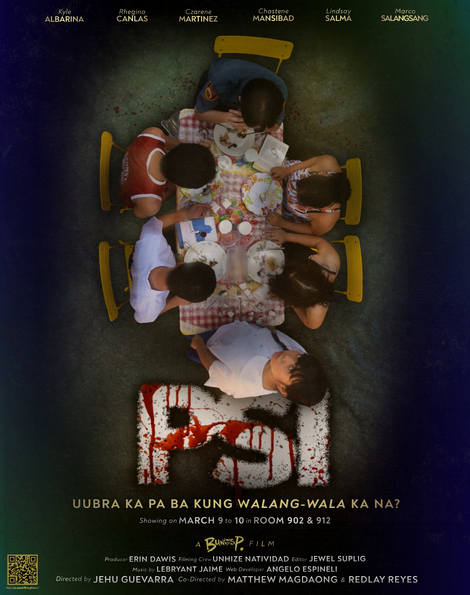

THE POSTER

A visual representation of chaos, suffering, and the interconnected pain within families facing poverty in the Philippines.
WATCH THE TRAILER
ABOUT THE FILM
PSI is a raw, unflinching examination of poverty in the Philippines. Through the lens of a struggling family, the film explores the interconnected systems of oppression—poverty, corruption, broken family dynamics, and misused power—that create a seemingly inescapable cycle of suffering.
Like a "basang baril" (loaded but neglected weapon), these systemic failures are dangerous not because they shout, but because they are ignored until irreversible damage is done.
FAMILY POVERTY
The structural inability of households to meet basic needs, perpetuating cycles across generations.
FAMILY DYNAMICS
How economic stress and trauma shape relationships, creating environments marked by conflict and neglect.
CORRUPTION
The systemic betrayal of public trust that disproportionately harms the most vulnerable.
MISUSED POWER
Authority exercised without accountability, silencing and controlling those who cannot resist.
BEHIND THE SCENES
RESEARCH-DRIVEN
Extensive research into family poverty, corruption, and systemic failures to ensure authenticity.
LOCAL COLLABORATION
Partnered with Filipino communities to authentically represent their stories and voices.
SYMBOLIC STORYTELLING
The title "PSI" carries multiple meanings—pressure and the symbol of struggle.
CINEMATIC REALISM
Shot on location in impoverished communities capturing the unvarnished reality of struggle.
AWARD RECOGNITION
Premiered at international film festivals with recognition for unflinching social commentary.
SOCIAL IMPACT
A portion of proceeds support advocacy organizations working toward systemic change.